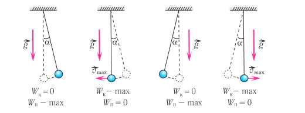
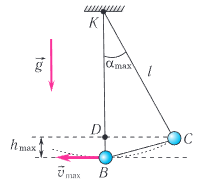
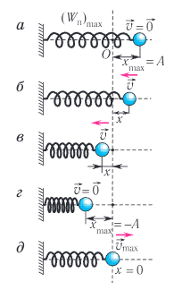
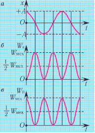

Видеоурок по теме
§ 3. Превращения энергии при гармонических колебаниях
При гармонических колебаниях полная механическая энергия системы остается неизменной, хотя скорость груза и его смещение непрерывно изменяются с течением времени. Какие превращения энергии наблюдаются в системе при этом? Как вычислить кинетическую или потенциальную энергию в любой момент времени?
Механическая энергия системы равна сумме ее кинетической и потенциальной энергий. Кинетической энергией тело обладает вследствие своего движения, а потенциальная энергия определяется взаимодействием тела с другими телами или силовыми полями. Механическая энергия замкнутой системы, в которой не действуют силы трения (сопротивления), сохраняется.
Привести в движение колебательную систему можно либо посредством отклонения ее из положения равновесия, либо сообщая телу начальную скорость (т. е. посредством толчка). В первом случае мы сообщаем системе дополнительную потенциальную энергию, а во втором — дополнительную кинетическую энергию.
Если силой трения можно пренебречь, то при колебаниях механическая энергия системы сохраняется. При этих условиях для данной системы выполняется закон сохранения механической энергии:
Рассмотрим превращения энергии при колебаниях математического маятника. Выберем систему отсчета таким образом, чтобы в положении равновесия его потенциальная энергия была равна нулю. При отклонении маятника на угол αmax (рис. 19, 20), соответствующий его максимальному смещению от положения равновесия (тело в точке С), потенциальная энергия маятника максимальна, а кинетическая энергия равна нулю:


Поскольку в момент прохождения положения равновесия (тело в точке В) потенциальная энергия маятника равна нулю Wп = 0, то из закона сохранения механической энергии следует (см. рис. 20), что (Wк)В = (Wп)С, т. е. что кинетическая энергия маятника (а следовательно, и скорость) в этот момент будет максимальна:
Таким образом, в положении равновесия потенциальная энергия маятника полностью переходит в кинетическую, а в положениях максимального отклонения — кинетическая энергия полностью переходит в потенциальную.
Приравнивая полные механические энергии маятника в точках С и В, получим:
Отсюда найдем модуль максимальной скорости маятника:
В любом промежуточном положении
Покажем, что аналогичные превращения энергии имеют место и для пружинного маятника (рис. 21).

В крайних точках, когда x = ±A и скорость маятника v = 0, кинетическая энергия груза полностью переходит в потенциальную энергию деформированной пружины (см. рис 21, а, г):
Таким образом, механическая энергия маятника пропорциональна квадрату амплитуды его колебаний.
В положении равновесия, когда x = 0, вся энергия маятника переходит в кинетическую энергию груза (см. рис. 21, д):
где vmax — модуль максимальной скорости груза при колебаниях.
В промежуточных точках полная энергия:
При отсутствии в системе потерь энергии процесс колебаний сопровождается только переходом потенциальной энергии в кинетическую и обратно. Такие превращения энергии происходят с вдвое большей частотой (рис. 22, а, б),
